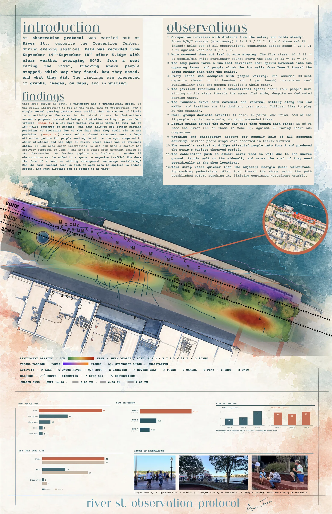
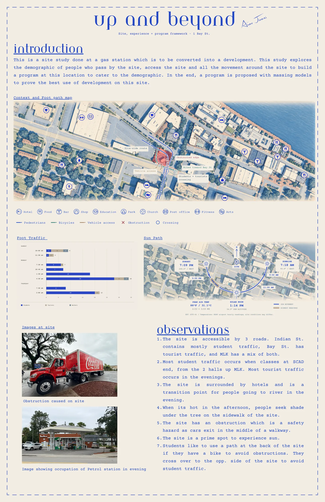
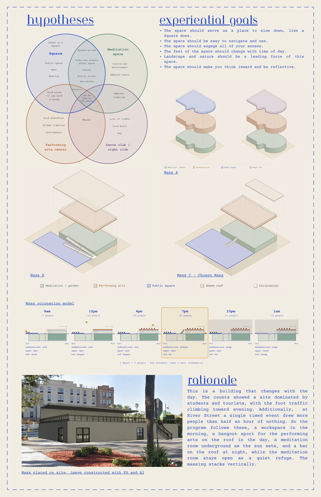
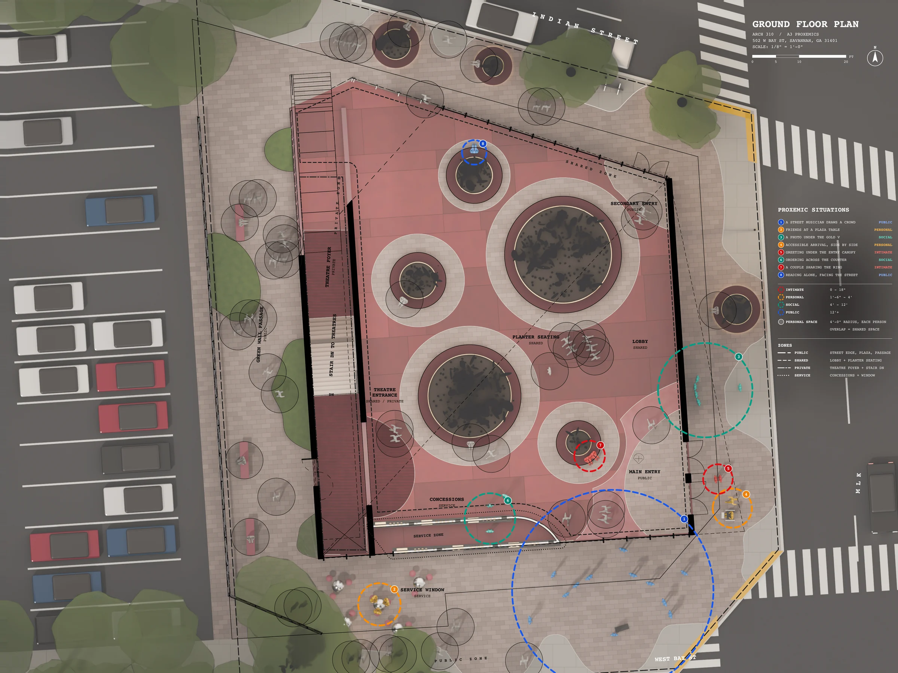
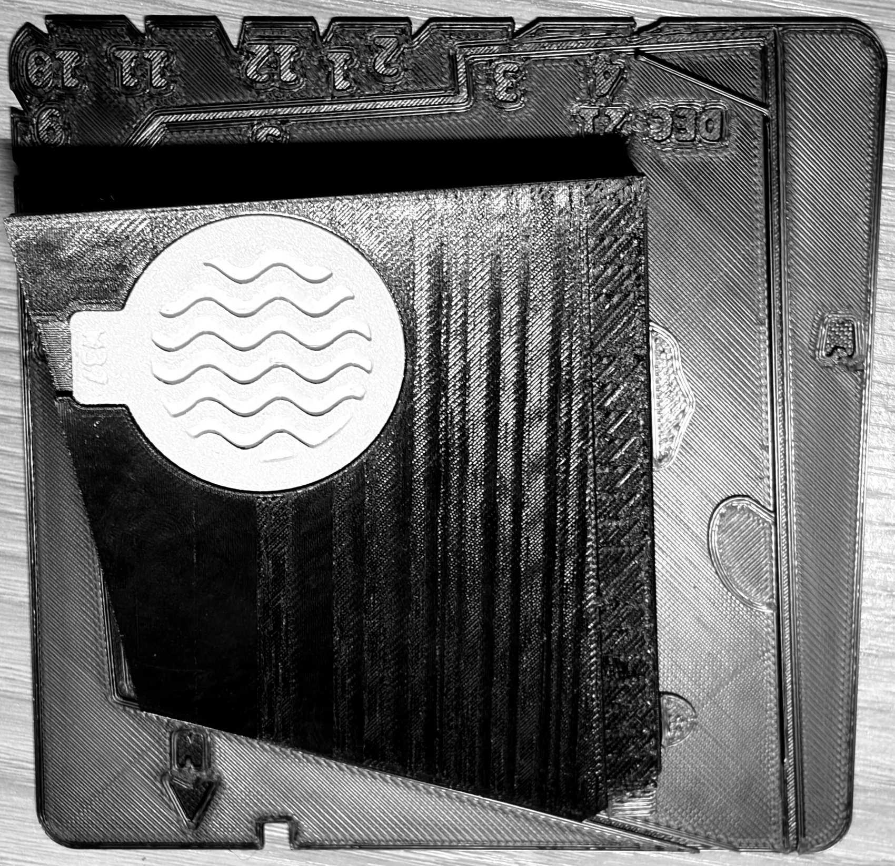

002 / Project
Studio 310
A studio project on a gas-station site where West Bay Street meets Martin Luther King Jr Drive in Savannah. The sequence is deliberate: observe how the ground is already used, let that evidence set the program, and only then draw.
Five evenings of structured observation on River Street produced the brief. Occupation rises with distance from the water and then holds steady; more movement does not produce more staying; and a single timed event — the vessel arriving at 6:32pm — drew more people than the preceding half hour of nothing. So the program follows the day rather than the plan: a workspace in the morning, a hangout for the performing arts through the afternoon, a meditation room as the sun sets, a bar on the roof at night, and the meditation room left open throughout as a quiet refuge.
The ground floor is then drawn as a proxemics study. The intimate, personal, social and public distance bands are mapped onto eight situations the plaza has to hold at once — a street musician drawing a crowd, friends at a plaza table, ordering across the counter, someone reading alone facing the street. Where personal-space radii overlap the drawing marks shared space, and the plan is zoned public, shared, private and service against them.

Observation
A01 — River Street
Site and program
A02
Massing
A02 — iterations
Plan
A03 — proxemics
Study model
Solar shading
Status
In progressStudio work in progress. The quarter continues into developed plans, sections and the envelope resolution that the louvre study feeds.